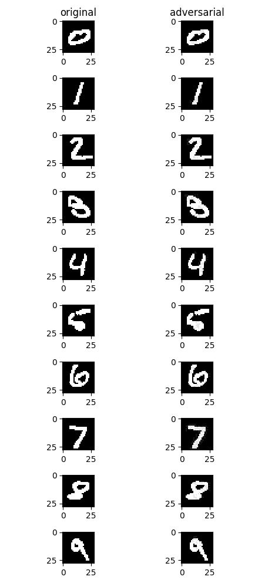

模型安全¶
概述¶
本教程介绍MindArmour提供的模型安全防护手段，引导您快速使用MindArmour，为您的AI模型提供一定的安全防护能力。
AI算法设计之初普遍未考虑相关的安全威胁，使得AI算法的判断结果容易被恶意攻击者影响，导致AI系统判断失准。攻击者在原始样本处加入人类不易察觉的微小扰动，导致深度学习模型误判，称为对抗样本攻击。MindArmour模型安全提供对抗样本生成、对抗样本检测、模型防御、攻防效果评估等功能，为AI模型安全研究和AI应用安全提供重要支撑。
对抗样本生成模块支持安全工程师快速高效地生成对抗样本，用于攻击AI模型。
对抗样本检测、防御模块支持用户检测过滤对抗样本、增强AI模型对于对抗样本的鲁棒性。
评估模块提供多种指标全面评估对抗样本攻防性能。
这里通过图像分类任务上的对抗性攻防，以攻击算法FGSM和防御算法NAD为例，介绍MindArmour在对抗攻防上的使用方法。
建立被攻击模型¶
以MNIST为示范数据集，自定义的简单模型作为被攻击模型。
引入相关包¶
import sys
import time
import numpy as np
from scipy.special import softmax
from mindspore import dataset as ds
import mindspore.common.dtype as mstype
import mindspore.dataset.transforms.vision.c_transforms as CV
import mindspore.dataset.transforms.c_transforms as C
from mindspore.dataset.transforms.vision import Inter
import mindspore.nn as nn
import mindspore.ops.operations as P
from mindspore.common.initializer import TruncatedNormal
from mindspore import Model
from mindspore import Tensor
from mindspore import context
from mindspore.train.serialization import load_checkpoint, load_param_into_net
from mindarmour.attacks.gradient_method import FastGradientSignMethod
from mindarmour.utils.logger import LogUtil
from mindarmour.evaluations.attack_evaluation import AttackEvaluate
context.set_context(mode=context.GRAPH_MODE, device_target="Ascend")
LOGGER = LogUtil.get_instance()
TAG = 'demo'
加载数据集¶
利用MindSpore的dataset提供的MnistDataset接口加载MNIST数据集。
# generate training data
def generate_mnist_dataset(data_path, batch_size=32, repeat_size=1,
num_parallel_workers=1, sparse=True):
"""
create dataset for training or testing
"""
# define dataset
ds1 = ds.MnistDataset(data_path)
# define operation parameters
resize_height, resize_width = 32, 32
rescale = 1.0 / 255.0
shift = 0.0
# define map operations
resize_op = CV.Resize((resize_height, resize_width),
interpolation=Inter.LINEAR)
rescale_op = CV.Rescale(rescale, shift)
hwc2chw_op = CV.HWC2CHW()
type_cast_op = C.TypeCast(mstype.int32)
one_hot_enco = C.OneHot(10)
# apply map operations on images
if not sparse:
ds1 = ds1.map(input_columns="label", operations=one_hot_enco,
num_parallel_workers=num_parallel_workers)
type_cast_op = C.TypeCast(mstype.float32)
ds1 = ds1.map(input_columns="label", operations=type_cast_op,
num_parallel_workers=num_parallel_workers)
ds1 = ds1.map(input_columns="image", operations=resize_op,
num_parallel_workers=num_parallel_workers)
ds1 = ds1.map(input_columns="image", operations=rescale_op,
num_parallel_workers=num_parallel_workers)
ds1 = ds1.map(input_columns="image", operations=hwc2chw_op,
num_parallel_workers=num_parallel_workers)
# apply DatasetOps
buffer_size = 10000
ds1 = ds1.shuffle(buffer_size=buffer_size)
ds1 = ds1.batch(batch_size, drop_remainder=True)
ds1 = ds1.repeat(repeat_size)
return ds1
建立模型¶
这里以LeNet模型为例，您也可以建立训练自己的模型。
定义LeNet模型网络。
def conv(in_channels, out_channels, kernel_size, stride=1, padding=0): weight = weight_variable() return nn.Conv2d(in_channels, out_channels, kernel_size=kernel_size, stride=stride, padding=padding, weight_init=weight, has_bias=False, pad_mode="valid") def fc_with_initialize(input_channels, out_channels): weight = weight_variable() bias = weight_variable() return nn.Dense(input_channels, out_channels, weight, bias) def weight_variable(): return TruncatedNormal(0.2) class LeNet5(nn.Cell): """ Lenet network """ def __init__(self): super(LeNet5, self).__init__() self.conv1 = conv(1, 6, 5) self.conv2 = conv(6, 16, 5) self.fc1 = fc_with_initialize(16*5*5, 120) self.fc2 = fc_with_initialize(120, 84) self.fc3 = fc_with_initialize(84, 10) self.relu = nn.ReLU() self.max_pool2d = nn.MaxPool2d(kernel_size=2, stride=2) self.reshape = P.Reshape() def construct(self, x): x = self.conv1(x) x = self.relu(x) x = self.max_pool2d(x) x = self.conv2(x) x = self.relu(x) x = self.max_pool2d(x) x = self.reshape(x, (-1, 16*5*5)) x = self.fc1(x) x = self.relu(x) x = self.fc2(x) x = self.relu(x) x = self.fc3(x) return x
加载预训练的LeNet模型，您也可以训练并保存自己的MNIST模型，参考快速入门。利用上面定义的数据加载函数
generate_mnist_dataset载入数据。ckpt_name = './trained_ckpt_file/checkpoint_lenet-10_1875.ckpt' net = LeNet5() load_dict = load_checkpoint(ckpt_name) load_param_into_net(net, load_dict) # get test data data_list = "./MNIST_unzip/test" batch_size = 32 dataset = generate_mnist_dataset(data_list, batch_size, sparse=False)
测试模型。
# prediction accuracy before attack model = Model(net) batch_num = 3 # the number of batches of attacking samples test_images = [] test_labels = [] predict_labels = [] i = 0 for data in dataset.create_tuple_iterator(): i += 1 images = data[0].astype(np.float32) labels = data[1] test_images.append(images) test_labels.append(labels) pred_labels = np.argmax(model.predict(Tensor(images)).asnumpy(), axis=1) predict_labels.append(pred_labels) if i >= batch_num: break predict_labels = np.concatenate(predict_labels) true_labels = np.argmax(np.concatenate(test_labels), axis=1) accuracy = np.mean(np.equal(predict_labels, true_labels)) LOGGER.info(TAG, "prediction accuracy before attacking is : %s", accuracy)
测试结果中分类精度达到了98%。
prediction accuracy before attacking is : 0.9895833333333334
对抗性攻击¶
调用MindArmour提供的FGSM接口（FastGradientSignMethod）。
# attacking
attack = FastGradientSignMethod(net, eps=0.3)
start_time = time.clock()
adv_data = attack.batch_generate(np.concatenate(test_images),
np.concatenate(test_labels), batch_size=32)
stop_time = time.clock()
np.save('./adv_data', adv_data)
pred_logits_adv = model.predict(Tensor(adv_data)).asnumpy()
# rescale predict confidences into (0, 1).
pred_logits_adv = softmax(pred_logits_adv, axis=1)
pred_labels_adv = np.argmax(pred_logits_adv, axis=1)
accuracy_adv = np.mean(np.equal(pred_labels_adv, true_labels))
LOGGER.info(TAG, "prediction accuracy after attacking is : %s", accuracy_adv)
attack_evaluate = AttackEvaluate(np.concatenate(test_images).transpose(0, 2, 3, 1),
np.concatenate(test_labels),
adv_data.transpose(0, 2, 3, 1),
pred_logits_adv)
LOGGER.info(TAG, 'mis-classification rate of adversaries is : %s',
attack_evaluate.mis_classification_rate())
LOGGER.info(TAG, 'The average confidence of adversarial class is : %s',
attack_evaluate.avg_conf_adv_class())
LOGGER.info(TAG, 'The average confidence of true class is : %s',
attack_evaluate.avg_conf_true_class())
LOGGER.info(TAG, 'The average distance (l0, l2, linf) between original '
'samples and adversarial samples are: %s',
attack_evaluate.avg_lp_distance())
LOGGER.info(TAG, 'The average structural similarity between original '
'samples and adversarial samples are: %s',
attack_evaluate.avg_ssim())
LOGGER.info(TAG, 'The average costing time is %s',
(stop_time - start_time)/(batch_num*batch_size))
攻击结果如下：
prediction accuracy after attacking is : 0.052083
mis-classification rate of adversaries is : 0.947917
The average confidence of adversarial class is : 0.419824
The average confidence of true class is : 0.070650
The average distance (l0, l2, linf) between original samples and adversarial samples are: (1.698870, 0.465888, 0.300000)
The average structural similarity between original samples and adversarial samples are: 0.332538
The average costing time is 0.003125
对模型进行FGSM无目标攻击后，模型精度由98.9%降到5.2%，误分类率高达95%，成功攻击的对抗样本的预测类别的平均置信度（ACAC）为 0.419824，成功攻击的对抗样本的真实类别的平均置信度（ACTC）为 0.070650，同时给出了生成的对抗样本与原始样本的零范数距离、二范数距离和无穷范数距离，平均每个对抗样本与原始样本间的结构相似性为0.332538，平均每生成一张对抗样本所需时间为0.003125s。
攻击前后效果如下图，左侧为原始样本，右侧为FGSM无目标攻击后生成的对抗样本。从视觉角度而言，右侧图片与左侧图片几乎没有明显变化，但是均成功误导了模型，使模型将其误分类为其他非正确类别。

对抗性防御¶
NaturalAdversarialDefense（NAD）是一种简单有效的对抗样本防御方法，使用对抗训练的方式，在模型训练的过程中构建对抗样本，并将对抗样本与原始样本混合，一起训练模型。随着训练次数的增加，模型在训练的过程中提升对于对抗样本的鲁棒性。NAD算法使用FGSM作为攻击算法，构建对抗样本。
防御实现¶
调用MindArmour提供的NAD防御接口（NaturalAdversarialDefense）。
from mindspore.nn import SoftmaxCrossEntropyWithLogits
from mindarmour.defenses import NaturalAdversarialDefense
loss = SoftmaxCrossEntropyWithLogits(is_grad=False, sparse=False)
opt = nn.Momentum(net.trainable_params(), 0.01, 0.09)
nad = NaturalAdversarialDefense(net, loss_fn=loss, optimizer=opt,
bounds=(0.0, 1.0), eps=0.3)
net.set_train()
nad.batch_defense(np.concatenate(test_images), np.concatenate(test_labels),
batch_size=32, epochs=20)
# get accuracy of test data on defensed model
net.set_train(False)
acc_list = []
pred_logits_adv = []
for i in range(batch_num):
batch_inputs = test_images[i]
batch_labels = test_labels[i]
logits = net(Tensor(batch_inputs)).asnumpy()
pred_logits_adv.append(logits)
label_pred = np.argmax(logits, axis=1)
acc_list.append(np.mean(np.argmax(batch_labels, axis=1) == label_pred))
pred_logits_adv = np.concatenate(pred_logits_adv)
pred_logits_adv = softmax(pred_logits_adv, axis=1)
LOGGER.info(TAG, 'accuracy of TEST data on defensed model is : %s',
np.mean(acc_list))
acc_list = []
for i in range(batch_num):
batch_inputs = adv_data[i * batch_size: (i + 1) * batch_size]
batch_labels = test_labels[i]
logits = net(Tensor(batch_inputs)).asnumpy()
label_pred = np.argmax(logits, axis=1)
acc_list.append(np.mean(np.argmax(batch_labels, axis=1) == label_pred))
attack_evaluate = AttackEvaluate(np.concatenate(test_images),
np.concatenate(test_labels),
adv_data,
pred_logits_adv)
LOGGER.info(TAG, 'accuracy of adv data on defensed model is : %s',
np.mean(acc_list))
LOGGER.info(TAG, 'defense mis-classification rate of adversaries is : %s',
attack_evaluate.mis_classification_rate())
LOGGER.info(TAG, 'The average confidence of adversarial class is : %s',
attack_evaluate.avg_conf_adv_class())
LOGGER.info(TAG, 'The average confidence of true class is : %s',
attack_evaluate.avg_conf_true_class())
LOGGER.info(TAG, 'The average distance (l0, l2, linf) between original '
'samples and adversarial samples are: %s',
attack_evaluate.avg_lp_distance())
防御效果¶
accuracy of TEST data on defensed model is : 0.973958
accuracy of adv data on defensed model is : 0.521835
defense mis-classification rate of adversaries is : 0.026042
The average confidence of adversarial class is : 0.67979
The average confidence of true class is : 0.19144624
The average distance (l0, l2, linf) between original samples and adversarial samples are: (1.544365, 0.439001, 0.300000)
使用NAD进行对抗样本防御后，模型对于对抗样本的误分类率从95%降至48%，模型有效地防御了对抗样本。同时，模型对于原来测试数据集的分类精度达97%，使用NAD防御功能，并未降低模型的分类精度。